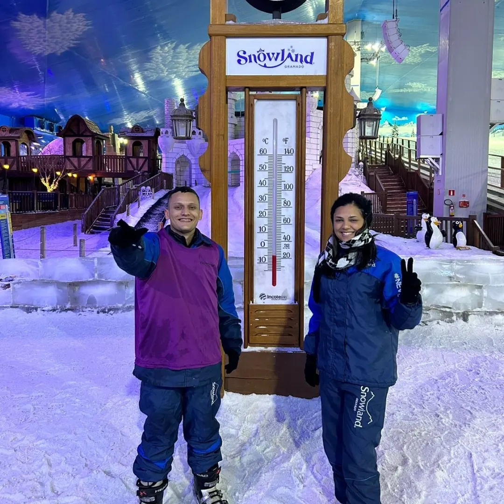

17 de Abril de 2023
Viagem a Gramado/RS - Snowland

Minha viagem a Gramado foi uma experiência verdadeiramente inesquecível, marcada por paisagens pitorescas, gastronomia incrível e cultura vibrante. Contudo, uma atração em particular elevou essa experiência a um nível inteiramente novo: o Snowland, um parque temático que é um verdadeiro oásis gelado em meio à bela serra gaúcha.